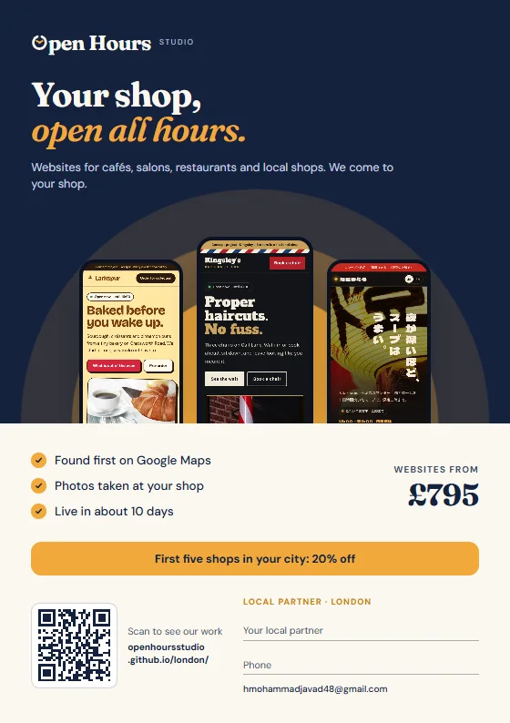
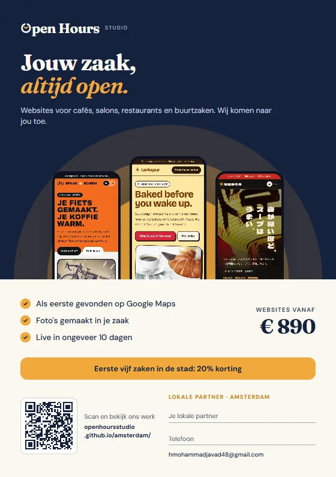
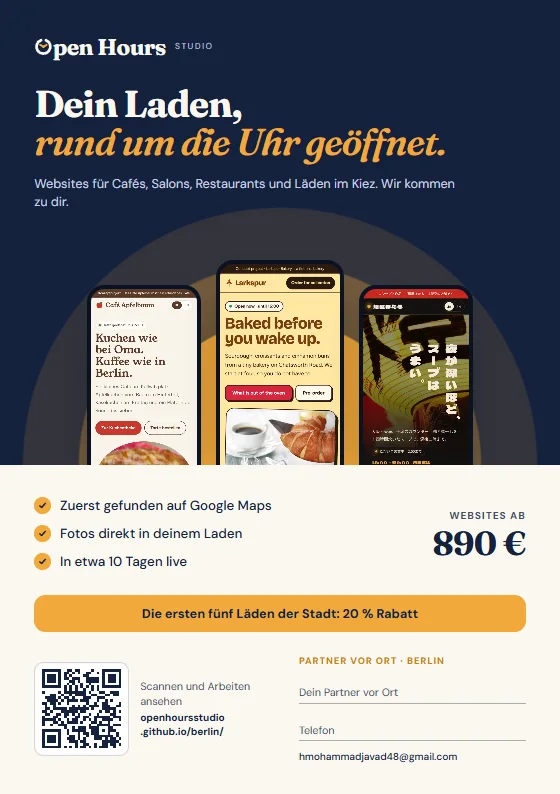
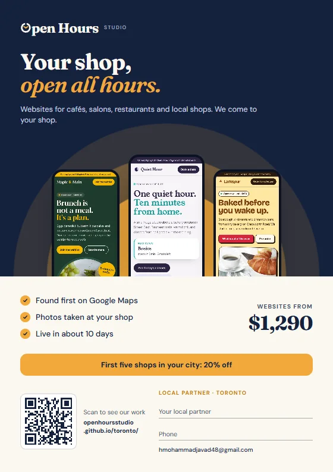

ロンドン開くPDFパートナー用チラシ
A5サイズ、各都市の言葉で。QRコードはその都市のページにつながります。PDFを印刷するか、お店で見せてください。名前と電話番号は手書きで。
A5サイズ、各都市の言葉で。QRコードはその都市のページにつながります。PDFを印刷するか、お店で見せてください。名前と電話番号は手書きで。

ロンドン開くPDF
アムステルダム開くPDF
ベルリン開くPDF
トロント開くPDF